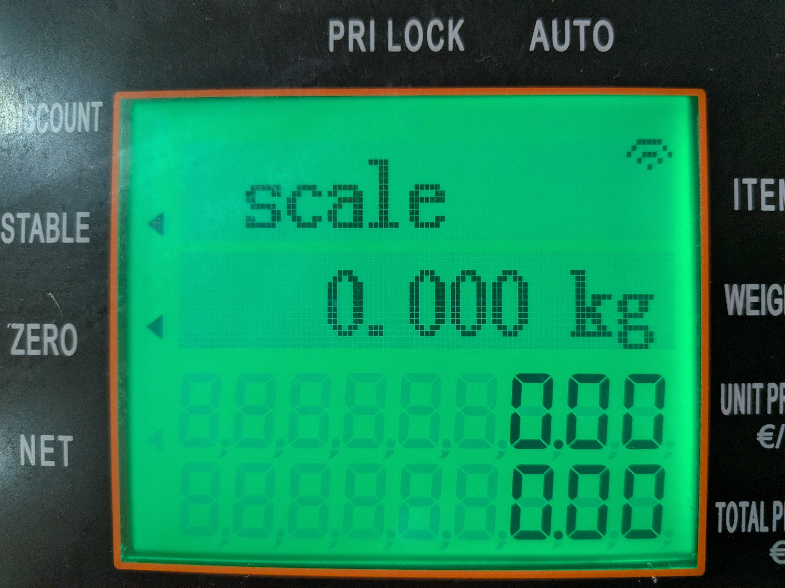
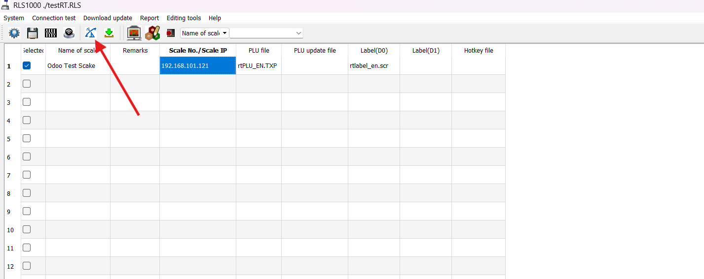
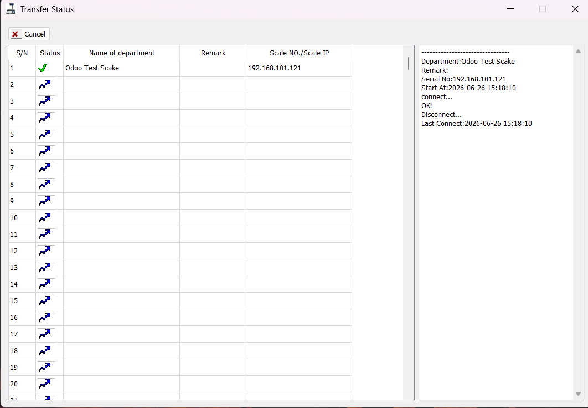
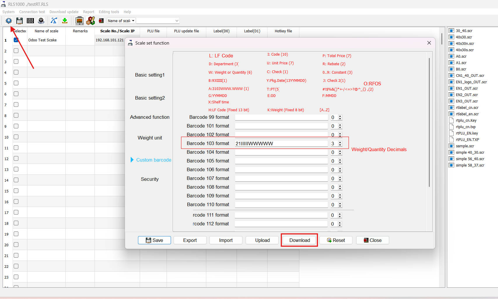
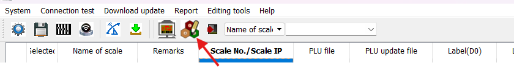
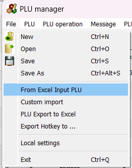
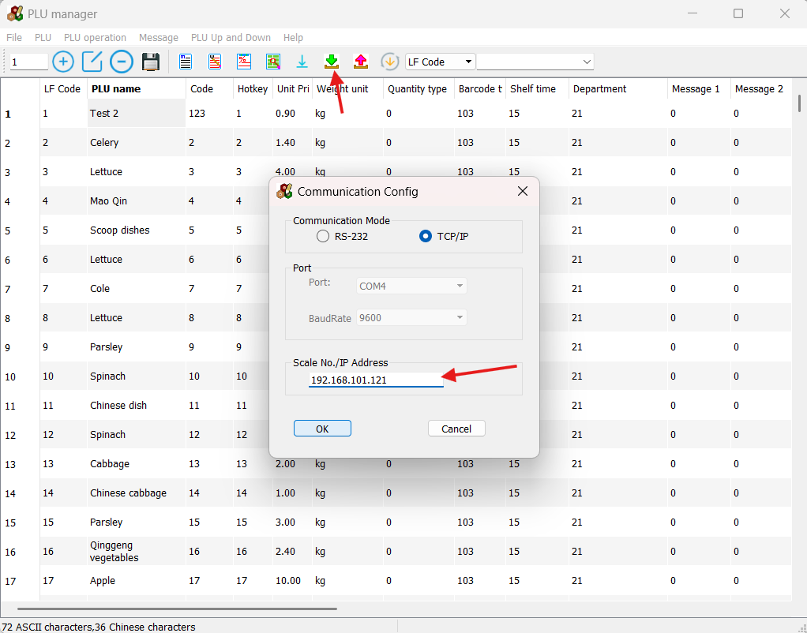
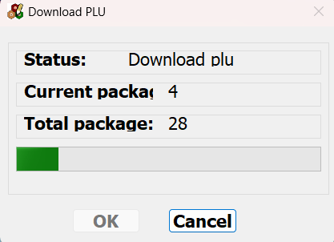

Requirements
Before starting, make sure you have the following assets ready:
- An RLS1000 weighing scale
- A Windows computer connected to the same network
- The RLS Software installed on the computer
-
RLS Software download:
Download RLS Software
Connect the Scale to Wi-Fi
Watch Configuration Video
Follow our step-by-step video guide for Wi-Fi setup.
Access the Scale Configuration Menu
- Press and hold the [SET] key for approximately 3 seconds.
- The scale enters the system configuration mode.
- Use [↑] and [↓] keys (or the numeric keypad) to navigate.
- Press [PRN/ENTER] to confirm.
Configure Wi-Fi Settings
- Open the SET WIFI menu.
- Select SSID and enter your Wi-Fi name.
- Open Wi-Fi Security Mode.
- Select WPA2-PSK/AES (or your router's security mode).
- Enter the Wi-Fi password.
Configure Network Settings
Windows network settings reference:
Microsoft Documentation
- Open the SET IP menu.
- Configure the scale IP address.
- Configure the subnet mask.
- Configure the gateway address.
Important: The scale's IP address must be within the same subnet as your router and must
not conflict with other devices on the network.
Restart and Verify Connectivity
- Save the settings and restart the scale.
- Wait until the Wi-Fi icon appears on the screen.

Successful Wi-Fi connection indicator on the scale display.
- Open the RLS Software on your PC.
- Enter the scale name and assigned IP address.
- Click Check Connection.

Locate the "Check Connection" button in the RLS Software.

Confirmation of a successful connection (Transfer Status OK).
Configure a Custom Barcode Format
The scale must generate barcodes that align with Odoo's barcode nomenclature for weight-based products.
- Open the RLS Software.
- Click the Settings (gear) icon.
- Navigate to the Custom Barcode tab.
- Select an unused barcode slot (e.g., 103).
- Enter the following format:
21IIIIIWWWWWW
- Set Right Digit to 3.
- Save the configuration.
- Click Download to push the settings to the scale.

Setting up the barcode format in RLS Software.
Configure Products in Odoo
Ensure each product in Odoo has a barcode prefix that matches your scale's configuration (e.g., beginning
with 21).
Export Product Data from Odoo
- Navigate to the Products menu in Odoo.
- Select the products you wish to sync.
- Click Action → Export.
- Select the following fields:
- Product Name
- Barcode
- Sales Price
- Choose XLSX format and click Export.
Prepare the PLU Data File
Format your exported XLSX data according to the required PLU table below.
Download Sample PLU Format (XLSX)
| Field |
Description |
| Product Name |
The name displayed on the scale's screen. |
| PLU No |
The unique lookup number for the product. |
| Price |
The unit price of the product. |
| Unit |
Weight unit (kg or g). |
| Barcode Type |
Must match your custom barcode slot (e.g., 103). |
Import Product Data into the Scale
- Open the RLS Software and select PLU Manager.

Access the PLU Manager from the toolbar.
- Go to File → From Excel Input PLU and select your prepared file.

Importing product data from an XLSX file.
- Verify the communication settings (IP address) and click OK.

Confirm the scale IP address before downloading.
- Monitor the download progress. Once completed, the data is synced.

Transferring PLU data to the scale.
Verify the Integration
- Place a product on the scale.
- Enter its PLU number (e.g., 1, 3, or 13).
- Press [PRN/ENTER] to print the label.
- In Odoo Point of Sale, scan the printed barcode.
Success Check: The product should appear in the POS cart with the correct weight and
calculated total price.